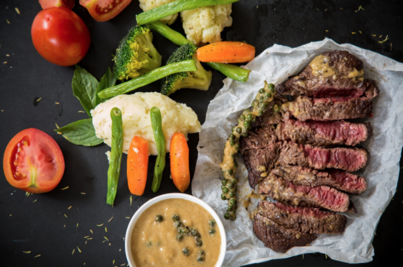
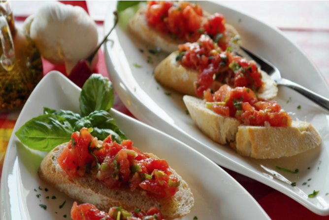
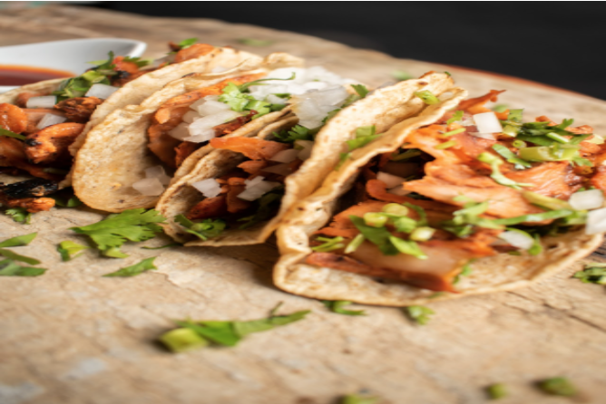
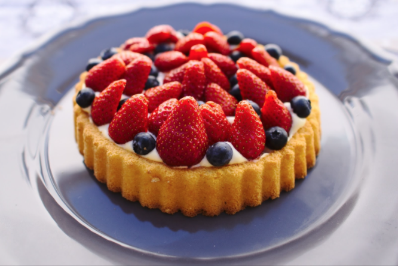

The Cooking Ranch
About
Recipes
Contact
Log-In
Farm To Table Fresh
Main Course
Getting dinner on the table is easy with these main dishes and entrées. Recipes from our test kitchens professionals are designed to inspire – whether you are entertaining or cooking at home.

Appetizers
Perfect party appetizers made easy. See our tasty appetizers with photos and tips on how to make them.

Healthy Alternativess
If you love the idea of improving your health, reducing added sugars and fats can provide numerous benefits. Here are some healthy alternatives to some of the most popular, yet unhealthy, food choices.

Desserts
Whether you crave sweet, savory, decadent or healthy, view our top-rated dessert recipes to satisfy your taste buds.
